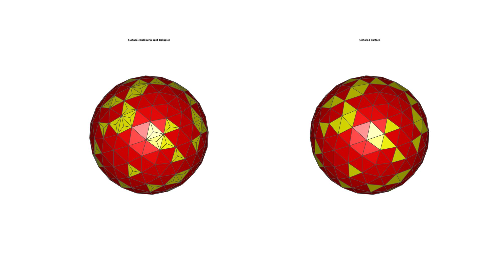

triSurfRemoveThreeConnect
Below is a demonstration of the features of the triSurfRemoveThreeConnect function
Contents
clear; close all; clc;
Plot settings
fontSize=10;
faceColor='b';
faceAlpha=1;
edgeColor=0.3*ones(1,3);
edgeWidth=2;
markerSize=5;
Creating example geometry
[F,V]=geoSphere(2,1);
indRand=randperm(size(F,1),round(size(F,1)/5));
L=false(size(F,1),1);
L(indRand)=1;
C=double(L);
% Create mid-triangle coordinates and subtriangles
[Fn,Vn]=subTriCentre(F,V,L);
Ln=false(size(Fn,1),1); Ln(end-nnz(L)*3:end)=1;
Cn=double(Ln);
Removing "3-connected" vertices and replacing associated faces
In a surface triangulation "3-connected" locations often contain poor quality triangles of a locally smaller area then the rest of the surface. Smoothening does not resolve this issue since the quality is not great improved even after vertex is at the centre of its neighbouring nodes. Hence the function triSurfRemoveThreeConnect instead removes the central nodes and groups the affected triangles into a single triangle.
[Ft,Vt,Ct]=triSurfRemoveThreeConnect(Fn,Vn,Cn);
Plotting results
hf=cFigure; hold on; subplot(1,2,1); title('Surface containing split triangles','FontSize',fontSize); xlabel('X','FontSize',fontSize); ylabel('Y','FontSize',fontSize); zlabel('Z','FontSize',fontSize); hp=patch('Faces',Fn,'Vertices',Vn,'FaceColor','flat','CData',Cn,'FaceAlpha',faceAlpha,'lineWidth',edgeWidth,'edgeColor',edgeColor); set(gca,'FontSize',fontSize); view(3); axis tight; axis equal; axis vis3d; axis off; colormap autumn; camlight('headlight'); lighting flat; drawnow; subplot(1,2,2); title('Restored surface','FontSize',fontSize); xlabel('X','FontSize',fontSize); ylabel('Y','FontSize',fontSize); zlabel('Z','FontSize',fontSize); hp=patch('Faces',Ft,'Vertices',Vt,'FaceColor','flat','CData',Ct,'FaceAlpha',faceAlpha,'lineWidth',edgeWidth,'edgeColor',edgeColor); % [hp]=patchNormPlot(Ft,Vt,0.25); set(gca,'FontSize',fontSize); view(3); axis tight; axis equal; axis vis3d; axis off; colormap autumn; camlight('headlight'); lighting flat; drawnow;

GIBBON www.gibboncode.org
Kevin Mattheus Moerman, gibbon.toolbox@gmail.com
GIBBON footer text
License: https://github.com/gibbonCode/GIBBON/blob/master/LICENSE
GIBBON: The Geometry and Image-based Bioengineering add-On. A toolbox for image segmentation, image-based modeling, meshing, and finite element analysis.
Copyright (C) 2019 Kevin Mattheus Moerman
This program is free software: you can redistribute it and/or modify it under the terms of the GNU General Public License as published by the Free Software Foundation, either version 3 of the License, or (at your option) any later version.
This program is distributed in the hope that it will be useful, but WITHOUT ANY WARRANTY; without even the implied warranty of MERCHANTABILITY or FITNESS FOR A PARTICULAR PURPOSE. See the GNU General Public License for more details.
You should have received a copy of the GNU General Public License along with this program. If not, see http://www.gnu.org/licenses/.